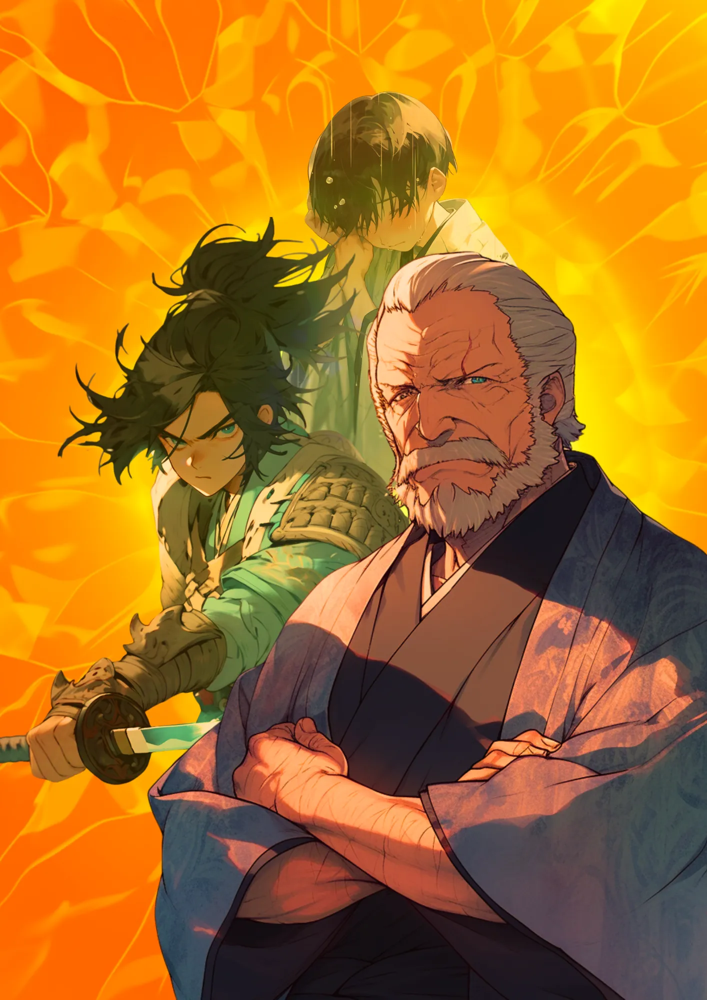

徳川家康
江戸幕府初代将軍
少年～老年
少年期、青年期、老年期、全てにおいて多くのエピソードが残る。
太陽
背景の太陽は日光東照宮や大河ドラマ「どうする家康」をイメージ。
[人物プロフィール]
生没年
1543年～1616年
時代
1543年～1616年
身分
武士・征夷大将軍
お茶が大好きで、お茶会をよく開いてたんだ。

 徳川家康ってどんなひと？
徳川家康ってどんなひと？
江戸幕府を開いた初代将軍で、日本の歴史を大きく変えた人物です。戦国時代の混乱を終わらせ、長い平和の時代を築きました。家康は、忍耐強さと戦略的な頭脳で知られ、三方ヶ原の戦いでは敗北を経験しながらもそれを糧に成長しました。
コラム
（カード右上）我もし濱松を去らば、刀を踏み折りて武士を止むべし。
カードの効果解説！
関ヶ原の勝者
関ヶ原の戦いは、1600年に起きた日本の大きな戦いで、徳川家康が勝利しました。家康はこの戦いに勝つことで、日本全国を統一し、江戸時代を始めました。彼の冷静な判断力と戦略が勝利の鍵でした。

今川と織田の人質
今川と織田の人質交換は、戦国時代に行われた出来事です。織田信長は今川義元のもとに人質として送られ、後に逃げ出しました。この経験が、信長の後の活動に影響を与えました。

弥生時代ってどんな時代？
弥生時代ってこんな時代 ってのをなんとなく。時代かぶってたりしたら関連人物 との繋がりについて纏める感 じで。弥生時代ってこんな時代 ってのをなんとなく。時代かぶってたりしたら関連人物 との繋がりについて纏める感 じで。


クイズ！：徳川家康が好きだった飲み物はなんでしょう？